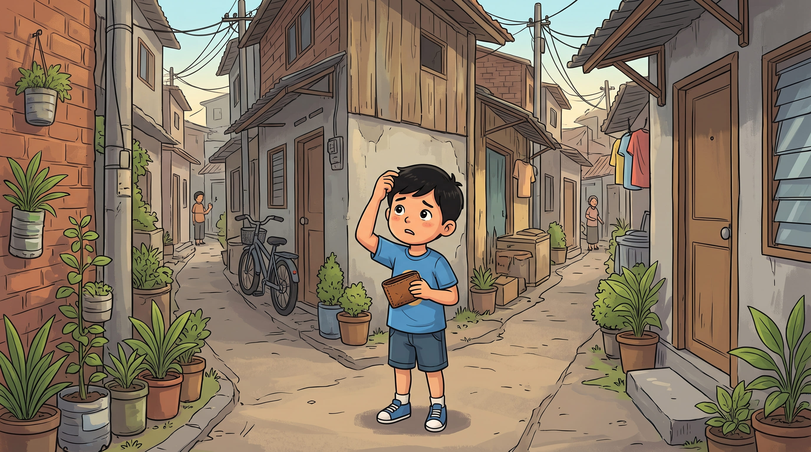

Kisah Owi dan Dompet yang Hilang
Kategori: Cerita Inspiratif

Sore itu, Owi berjalan pulang dari taman bermain sambil bersenandung riang. Di usianya yang baru tujuh tahun, Owi dikenal sebagai anak yang ramah dan ringan tangan. Tiba-tiba, langkahnya terhenti. Matanya tertumbuk pada sebuah dompet lusuh berwarna cokelat yang tergeletak di pinggir jalan.
Owi memungutnya dan membukanya perlahan. Di dalamnya terdapat beberapa lembar uang pecahan sepuluh ribuan dan lima ribuan yang terlipat rapi. Owi langsung teringat pada Ibu Siti, penjual cilok keliling yang baru saja lewat mendorong gerobaknya beberapa menit lalu.
"Wah, ini pasti dompet milik Ibu penjual cilok tadi! Kasihan sekali kalau uang hasil jualannya hilang," gumam Owi cemas.
Tanpa membuang waktu, Owi berlari kecil menyusuri gang sempit tempat Ibu Siti biasa lewat. Ia bertanya kepada beberapa warga hingga akhirnya sampai di ujung gang. Di sanalah rumah Ibu Siti berdiri. Dindingnya terbuat dari bilik bambu yang sudah tua dan atapnya tampak mulai rapuh.
Owi mengetuk pintu kayu itu dengan pelan. "Permisi, Bu..."
Pintu terbuka. Ibu Siti muncul dengan wajah lelah, sementara di belakangnya tampak dua orang anak kecil yang sedang duduk bermain di atas tikar tipis. Sejak suaminya meninggal dunia, Ibu Siti memang berjuang sendirian mencari nafkah untuk kedua buah hatinya.
"Eh, Nak Owi? Ada apa, Nak?" tanya Ibu Siti lembut.

Owi tersenyum lalu mengulurkan dompet cokelat itu dengan kedua tangannya. "Bu, ini dompet Ibu, ya? Tadi jatuh di dekat jalan besar."
Mata Ibu Siti langsung membelalak kaget. Ia buru-buru meraba saku celemeknya yang ternyata sudah kosong. Dengan tangan gemetar, ia menerima dompet tersebut.
"Ya ampun, Nak! Benar, ini dompet Ibu. Terima kasih banyak, ya. Uang di dalamnya ini modal untuk Ibu belanja bahan cilok besok pagi. Kalau sampai hilang, Ibu tidak tahu harus berjualan pakai apa besok," ucap Ibu Siti dengan mata berkaca-kaca penuh haru.
Sebagai rasa terima kasih, Ibu Siti bergegas mengambil kantong plastik dan memasukkan beberapa butir cilok hangat lengkap dengan bumbu kacangnya.
"Ini untuk Nak Owi, dimakan ya. Anggap saja hadiah dari Ibu," katanya sambil menyodorkan bungkusan itu.
Namun, Owi menggeleng pelan dan tersenyum sopan. "Terima kasih banyak, Bu, tapi tidak usah. Ciloknya disimpan saja untuk adik-adik di dalam atau dijual lagi besok. Owi senang kok bisa membantu Ibu."
Ibu Siti tersenyum hangat dan mengusap kepala Owi penuh rasa syukur. Setelah berpamitan, Owi melangkah pulang menyusuri jalan setapak. Meskipun tidak membawa pulang cilok, hati Owi terasa sangat hangat dan bahagia. Baginya, melihat senyum lega di wajah Ibu Siti sudah menjadi hadiah yang paling indah hari itu.